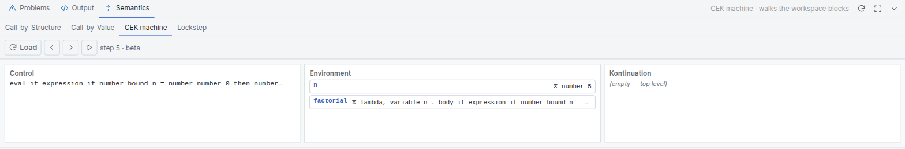
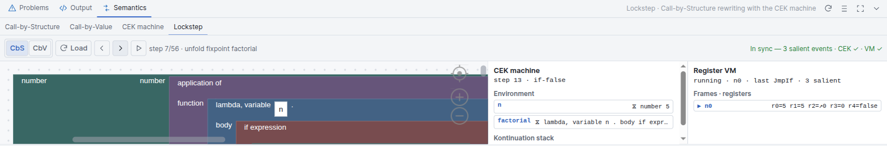

Reduction you can drive by hand
B-Lambda evaluates every program twice, by two independent methods, and then checks that they agree. This chapter is about the four views that let you watch that happen — and about the one number that legitimately differs between them.
The Semantics dock
Open the bottom panel with Ctrl + J and choose Semantics. Four tabs:
| Tab | Shows |
|---|---|
| Call-by-Structure | Substitution reduction under the default strategy, drawn as blocks |
| Call-by-Value | The same, with arguments reduced before they are substituted |
| CEK machine | An environment machine: control, environment, kontinuation |
| Lockstep | Substitution, the CEK machine and the register VM, side by side |
A reduction trace is always of something. The Call-by-Structure and Call-by-Value tabs stay empty until you pick one, and prompt you: “Right-click an application block and choose Call-by-Structure or Call-by-Value.” The context menu on any application block carries Evaluate – Call-by-Structure, Evaluate – Call-by-Value and Show Type and Value. The CEK and Lockstep tabs instead have their own Load button and run the whole program.
Call-by-Structure
Call-by-Structure (CbS) is B-Lambda's default evaluation strategy, as it is in MnL. Under CbS, β-reduction substitutes the argument's evaluated, but keep the original block structure into every occurrence of the parameter, as independent copies. Each use site then reduces its own copy.
The consequence is the whole point of the strategy: duplicated work becomes duplicated structure, and you can see it.
(λx. x + x) (3 * 7)
CbS: reduce and keep the structure → (λx. x + x) (3 * 7 → 21)
substitute the structure → (3 * 7 → 21) + (3 * 7 → 21) → 42
the multiplication happens ONCE
CbV: reduce the argument first → (λx. x + x) 21
then substitute the value → 21 + 21 → 42
the multiplication happens ONCEBoth reach 42. The difference is not the answer, it is the amount of work — and
under CbS that difference is physically visible as two copies of the same sub-tree sitting in the
trace. The Copy vs Lookup example exists to show precisely this contrast.
The trace itself renders as a live Blockly workspace, not as text, with the substituted regions labelled — Substituted block for parameter, Function body of CbS — so you can tell which part of the new term came from where.
Because copies are real, the trace of a deeply recursive program is genuinely big — the Factorial 5 trace unrolls the whole recursion as blocks. That is the honest picture of what CbS does, but it is awkward to read in a short panel. Maximise the dock, and use Run: Arrange Reduction Steps from the command palette to lay the steps out. For learning the strategy itself, start with a small term like Copy vs Lookup rather than factorial.
Call-by-Value
Call-by-Value reduces the argument to a value first, then substitutes that value. The work is done once. It is the strategy most real functional languages use, and it is available here for exactly one reason: so you can put it next to CbS and see what the choice costs.
Everything else about the tab is identical — same block rendering, same controls, same right-click entry point.
No reduction under a binder
Under both strategies, B-Lambda does not reduce inside the body of an abstraction. A λ is a value. Its body is only reduced once an application has substituted something for the parameter.
λx. (2 + 3) -- stays as it is. Already a value.
(λx. (2 + 3)) 7 -- now the body reduces: → 5The Normal Form example loads a term that is already in normal form, so you can confirm that the stepper genuinely refuses to go further rather than merely happening not to. This matches MnL's behaviour, and it is why the two languages' reduction traces can be compared at all.
The CEK machine
The second, independent evaluator. Control, Environment, Kontinuation — and no store, which is what distinguishes it from the CESK machine in B-MJ, where objects live on a heap.

step 5 · beta. The rule that just fired is named next to the step
count.Three columns, in machine order:
- Control — what the machine will evaluate next.
- Environment — the current bindings. Under CbS an argument is bound as a thunk (a block plus its environment), and every variable lookup re-enters it.
- Kontinuation — the pending work, innermost first. Empty means you are at the top level.
Controls are Load, Back, Step and Play. If you edit the program while a machine is loaded, the panel says Program changed — load it again to restart rather than silently stepping a stale term.
The step function is pure: it returns a new state rather than mutating the current one. So Back does not re-run the program from the beginning and hope to land in the same place — it restores the exact earlier state. This is also what makes the machine safe to compare against the substitution trace.
Environment lookup is the lazy counterpart of CbS's physical copying: instead of duplicating a sub-tree, the machine keeps one thunk and re-enters it. That is why the machine fires the same salient rules in the same order as the substitution trace, which is the invariant the Lockstep view checks. Note that the CEK tab has no per-tab strategy switch — it runs the language default, CbS.
Lockstep
The tab that ties everything together. Lockstep runs three evaluators on the same program and pairs them up:

JmpIf — and the badge on the right
confirms In sync — 3 salient events · CEK ✓ · VM
✓.- Left — the substitution state, as a block tree.
- Middle — the CEK machine state that has “caught up” to it.
- Right — the register VM, with its frames and registers.
The status line reports a syncCount of matched salient rules and flags divergence.
In sync with both ticks means the substitution semantics, the abstract machine and the
compiled bytecode all agree on this program, at this step, under this strategy — the
operational-correspondence claim, executed rather than asserted.
Unlike the CEK tab, Lockstep keeps a CbS / CbV switch, defaulting to CbS, so you can check the correspondence under either strategy.
Why step counts differ
In Fig. 2 the substitution trace says step 7 and the CEK machine says step 13. Neither is wrong. They are counting different things.
| Counts | One press advances | |
|---|---|---|
| CEK machine | Every transition, including the administrative ones: environment lookups, pushing and popping continuation frames, descending into a sub-term, returning a value. | one machine transition |
| Substitution trace | Only salient reductions — beta,
if-true / if-false, and primitive prim …
steps. The human-visible redexes. |
one visible redex |
So one reduction frame corresponds to several machine micro-steps, and the machine's number is always
the larger. Lockstep advances the machine in bulk between salient rules: the bookkeeping transitions
still increment the machine's count but do not add a reduction frame. Both reach the same normal
form, and syncCount confirms they agree on the salient trace.
A substitution counter compared against a machine counter is always coarser, because the machine also counts the steps the rewriter never names. Two counters at the same granularity stay equal — which is why B-MJ's A vs B tab shows both its machines finishing in exactly 51 steps.
You can also reach both traces without the dock: More → Call-by-Structure Trace,
Call-by-Value Trace and Lockstep Debugger, or the matching
Run: commands in the palette.